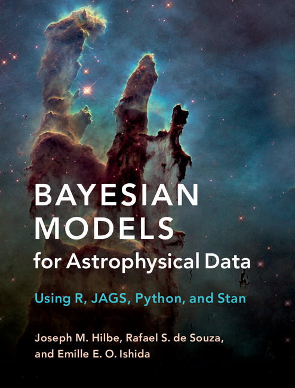

Publications.
A searchable bibliography generated from my CV BibTeX record: papers, software, reports, chapters, and books.
130+
scholarly outputs
$1M+
competitive funding as PI
PROSE
Best Book in Cosmology and Astronomy
80+
COIN research network